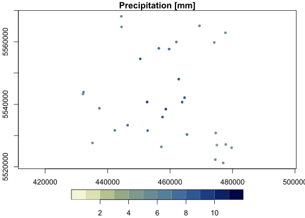

Code
library(sf)
library(scico)
set.seed(123)
n <- 30
x <- runif(n, 430000, 480000)
y <- runif(n, 5520000, 5570000)
# A smooth precipitation pattern with small random disturbances
value <- 5 + 5 * exp(-((x - 455000)^2 + (y - 5545000)^2) /
(2 * 12000^2)) + rnorm(n, sd = sqrt(0.15))
dom <- data.frame(x, y, value) |>
st_as_sf(coords = c("x", "y"), crs = 32633)
# Use the same precipitation scale in all maps of this example.
precip_breaks <- seq(0, 12, by = 1)
precip_colors <- scico(length(precip_breaks) - 1,
palette = "davos", end = 0.9, direction = -1)
plot(dom["value"], breaks = precip_breaks, pal = precip_colors,
main = "Precipitation [mm]", pch = 20,
axes = TRUE, graticule = FALSE, key.pos = 1)- 1
- Set the seed before generating random locations and values so that the example is reproducible.
- 2
-
Store the stations as an
sfobject. These coordinates were generated in UTM zone 33N, so we assign that CRS when creating the object. Assigning a CRS describes existing coordinates; transforming a CRS recalculates them.
